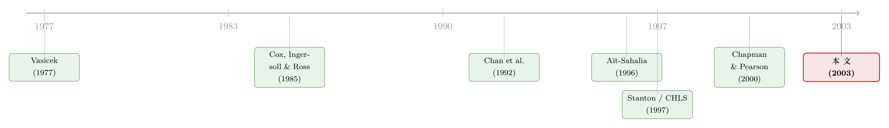

利率会拐弯，是数据说的，还是先验替它弯的？
本文读的是 Jones (2003, Review of Financial Studies)：人们曾用一系列精致的非参数方法「确认」短期利率存在强烈的非线性均值回复——利率在中段几乎像随机游走，只在极高或极低时才被强力拉回。Jones 用一套新的贝叶斯方法重做了这件事，结论却是：这个「事实」只在带有信息量的先验下才成立；其中「平稳性」这条看似无害的假设，本身就是一句关于漂移形状的强先验。一旦换上近似 Jeffreys 先验、又不强加平稳性，非线性几乎荡然无存。更尖锐的是，这种非线性主要是日度数据里的现象，而日度数据里约有一半的波动只是不会传导到长端收益率的暂时性噪声。
1 一个被反复确认的「事实」
先从一个让无数固定收益研究者着迷的问题说起：短期利率，到底是怎么「走」的？
它的方差，我们可以用高频数据估得相当准。可它的漂移 (drift)——也就是「下一刻平均会往哪儿动、动多快」——却出了名地难缠。原因很简单：短期利率极其持久 (persistent)，一段样本里它可能几十年都赖在一个区间里慢慢蹭，你几乎看不到几次完整的「回到均值再被推开」的循环。要从这么黏的序列里把漂移的真实形状辨认出来，是一件近乎奢望的事。
如果我们只想给债券定价，这个麻烦其实可以绕开——用 Hull and White (1990) 或 Heath, Jarrow, and Morton (1992) 那样的无套利方法，直接从横截面的债券价格里「倒推」出风险中性测度下的漂移就行。但如果我们想从价格里学到东西、想检验诸如预期假说这类把长短端联系起来的理论，那就躲不过去了：你必须在真实测度下估计这条漂移曲线。
于是，过去二十多年里，一批最聪明的计量工具被搬来对付它。Aït-Sahalia (1996b) 和 Stanton (1997) 各自提出了基于非参数的方法，去估计短期利率的非线性漂移与扩散。两篇文章不约而同地发现：漂移的非线性至关重要。Aït-Sahalia 甚至直言，针对 Chan et al. (1992) 那一类线性漂移模型，「现有模型被拒绝的主要根源，正是漂移的强非线性」。在他的估计里，利率在几乎整个历史区间内都表现得像随机游走，只有在变得很高或很低时才会被拉回中段。Stanton (1997) 得到的图景类似——15% 以下几乎没有均值回复，更高处才出现明显的负漂移。Conley, Hansen, Luttmer, and Scheinkman (1997，下称 CHLS) 的结论更极端：漂移只在 3% 以下或 11% 以上才不为零。
这幅图后来几乎成了教科书插图：利率在中间「躺平」，两端被强力收束。看上去，这是一个被多种方法反复确认的「稳健事实」。
但真正关键的一步在于——这些方法，有没有一个共同的、藏在角落里的假设？
2 平稳性，其实是一句关于漂移形状的先验
有。它们几乎都假设了利率过程的平稳性 (stationarity)。
平稳性听起来人畜无害，甚至颇有经济学魅力：利率总不能无限漂走吧，它该有个长期归宿。可问题是，正式的统计检验并不怎么支持它。Pagan, Hall, and Martin (1996) 报告的各种短期利率 Dickey–Fuller 统计量大多落在 0 到 -2 之间，不足以在 95% 水平上拒绝单位根；连 Aït-Sahalia 那套数据的 Dickey–Fuller 统计量也只有 -2.29，仍高于 5% 的临界值 -2.88。也就是说，我们其实没有把握说利率是平稳的。
接着，一个自然的问题是：假设平稳，到底「免费」吗？
Jones 在这里点破了一层窗户纸：平稳性不是一个中性的技术条件，而是一句关于漂移形状的实质性先验。 想想看，要让一个扩散过程平稳，它的漂移就必须在两端「兜得住」——高了要往下拉，低了要往上推。在本文的主模型里，一个充分条件就是二次项系数 \(\alpha_2<0\) 且 \(1/r\) 项系数 \(\alpha_3>0\)；Aït-Sahalia (1996b) 用的正是这组限制。换句话说，你一旦要求平稳，就等于事先规定了漂移在两端必须弯回来。再去「发现」两端有强非线性回复，多少有点循环论证的味道——无论这个限制看上去多么合理，强加它的分析都冒着把待答问题机械地假设掉的风险。
（关于「数据本身从未触及那些极端区间、漂移的弯却是被假设逼出来的」这层警觉，可参见《数据从没越过那两条线，利率的漂移却「凭空」弯了》。）
更糟的是，即便利率真的平稳，它的高持久性也让小样本推断变得不可靠。Pritsker (1998) 发现，在 Vasicek (1977) 型利率的设定下，Aït-Sahalia (1996b) 那个渐近显著性水平的设定检验，在某些情形下会以约 50% 的概率拒绝为真的原假设。Chapman and Pearson (2000) 则更直接：Stanton 和 Aït-Sahalia 的估计量都存在一种有限样本偏误，会让一条本来是线性的漂移「看起来」是非线性的；他们因此认为，现有证据不足以把非线性漂移当成一个「稳健的程式化事实」。
到这里，张力已经拉满：一边是被反复确认的非线性，一边是「这非线性可能是假设和小样本一起造出来的」。要在二者之间做个了断，需要一把不依赖渐近近似、也能在非平稳下给出准确推断的尺子。Jones 造的，正是这把尺子。
3 模型与方法：把贝叶斯请进扩散过程
先把要检验的模型摆出来。传统的单因子利率，被写成一个带常弹性方差 (constant elasticity of variance, CEV) 的线性漂移扩散：
$$ dr_t = \kappa(\mu - r_t)\,dt + \sigma r_t^{\gamma}\,dB_t . $$
其中 \(\mu\) 是利率漂向的长期均值，\(\kappa\) 是回复速度，\(\sigma\) 度量波动，方差弹性由 \(2\gamma\) 决定。\(\gamma=0\) 即 Vasicek (1977)，\(\gamma=0.5\) 即 Cox, Ingersoll, and Ross (1985)，这一类模型由 Chan et al. (1992) 系统检验过。
Aït-Sahalia (1996b) 主张用灵活的函数形式去逼近未知的真实形状，于是漂移被展开成一个含 \(r_t^2\) 和 \(1/r_t\) 的多项式。本文沿用 CHLS 的设定——Aït-Sahalia 的漂移配上 CEV 扩散——作为贯穿全文的主模型：
值得一提的是，CHLS 注意到：当 \(\gamma>1.5\) 时，连 \(\alpha_2<0\) 这条限制都可以不要——此时过程的平稳可以是「波动诱致」而非「漂移诱致」的。Jones 估出的 \(\gamma\) 恰恰在 1.5 附近，这让「平稳性到底来自漂移还是来自波动」成了一个可以掰扯的真问题。他因此分别考察了强加这两种平稳性的后果。
然后，是真正关键的一步：怎么估？
扩散过程估计的根本难点，在于它的转移密度 (transition density) 通常没有解析式，似然函数因而也写不出来；而贝叶斯后验是先验乘似然再归一化，似然写不出，贝叶斯分析自然也卡住了。Jones 的解法是把三件简单的数值工具拼起来：欧拉离散 (Euler approximation)、Gibbs 抽样器、以及 Metropolis–Hastings 算法——这一支统计技术统称马尔可夫链蒙特卡洛 (Markov chain Monte Carlo, MCMC)。
第一步，把连续过程在长度为 \(h\) 的小步上欧拉离散：
$$ r_{(k+1)h} - r_{kh} = h\,\mu(r_{kh},\phi) + \sqrt{h}\,\sigma(r_{kh},\phi)\,\varepsilon_k,\qquad \varepsilon_k \sim \text{i.i.d.}\ N(0,1). $$
由 Pedersen (1995)、Brandt and Santa-Clara (2002) 的结果，当步长 \(h\to 0\) 时，欧拉近似的似然会收敛到真实扩散的似然。这意味着只要把步长取得足够细，离散化偏误就可以忽略——而这一点对短期利率尤其要紧：日度数据到底够不够「高频」、离散化偏误是否可忽略，本身就是一个只能靠实证去回答的问题（这层「采样频率该多高」的纠结，可参见《一秒一笔的数据，为什么只敢拿 5 分钟用一次？》）。
第二步，是本文方法的灵魂——用高频数据做增广 (data augmentation)。现实里我们往往只有月度或日度的观测，频率不够细。Jones 借用 Tanner and Wong (1987) 的数据增广算法：把观测到的低频数据 \(R^o\) 之间，填进许多条更高频的、未观测的「桥」\(R^u\)。马尔可夫链于是在两个条件分布间交替抽样：先抽参数 \(p(\phi \mid R^o, R^u)\)，再抽路径 \(p(R^u \mid \phi, R^o)\)。其中参数那一步由贝叶斯法则给出：
$$ p(\phi \mid R^o, R^u) \;\propto\; L(\phi; R^o, R^u)\,p(\phi), $$
而欧拉近似让似然 \(L\) 恰好是一串高斯转移密度的乘积，于是这个条件密度高度可处理。至于高维的路径分布 \(p(R^u \mid \phi, R^o)\) 形式未知，Jones 改造了 Jacquier, Polson, and Rossi (1994) 为随机波动率模型设计的循环 Metropolis 链：逐点地、一个一个地把 \(R^u\) 的元素抽出来。
这套「增广」的妙处，在 Jones 笔下被讲得很形象：它不像模拟矩估计那样让模拟路径自由地往前漂、也不像模拟极大似然那样只钉住一端，而是把每条模拟路径的两头都钉在观测数据上，像在低频数据之间架桥。两端都钉死，桥的方差就被大幅压低，蒙特卡洛积分因而更高效。更重要的一点他反复强调：增广高频数据是为了减小离散化偏误，而不是给样本添信息——每条高频路径确实带来信息，但通过对具体路径求期望积分掉，这点信息会在最终后验里被「洗」掉。
这样得到的，是一套即便对非平稳模型也能给出精确有限样本推断的贝叶斯方法。而稳健性的检验思路，借自 Leamer (1985) 与 Poirier (1995)：用一组各自代表某种「先验无知」的先验分别去跑，如果结论对先验设定高度敏感，那就说明并不存在一个「客观」的结论。
4 反转：换一个先验，非线性就消失了
现在把尺子对准那个被反复确认的「事实」。
Jones 用一系列先验重做估计。结论是冷峻的：生成非线性漂移的那些先验，其实可以合理地被解读为「带信息量」的——尤其是那些被广泛当作「无信息」「平」的先验，连同平稳性假设，恰恰是把非线性顶起来的两根柱子。而当他换上一个近似的 Jeffreys 先验、又不强行假设平稳时，结果是：几乎没有任何证据支持利率存在均值回复。
换句话说，那条人人都见过的「中段躺平、两端收束」的漂移曲线，与其说是数据在说话，不如说是「平稳 + 平先验」这套默认配置替数据说的。全面有效的参数分析，未必比被诟病的非参数分析更可靠——结论可能很大程度上是被隐含的先验信念驱动的，而那些先验里含着关于漂移形状的、绝非微不足道的信息。
这正呼应了 Chapman and Pearson (2000) 的怀疑，只是 Jones 用一条完全不同的、贝叶斯的路径抵达了同一个怀疑的终点（关于「换一把尺子，老结论就翻案」的类似故事，也见《利率会不会「拐弯」？——一个被换了把尺子量出来的老问题》）。
5 第二记重拳：非线性只是「日度数据」的幻觉
如果说第四节是釜底抽薪，那么本文最后的发现则是补了一刀。
Jones 指出：支持非线性漂移的证据，主要是高频（日度）数据的特征，而不是月度数据的特征。同一个扩散模型，本该自动决定所有时间跨度上的条件分布——这正是用扩散框架同时看不同频率数据的好处。可现实是，日度和月度给出的结论对不上。
为什么？因为日度数据里含着一个暂时性的噪声成分，它大约占了短期利率日度变动的一半。这部分波动是短命的、会很快消散的，因此它不会反映在更长期限收益率的波动里——长端收益率本质上是对未来短端的平均预期，暂时性噪声在平均中被抹平了。一旦你把这种瞬时噪声误当成短期利率扩散的一部分，再去逐点估计漂移，自然就会「看见」并不存在的非线性。这本身就暴露了单因子模型的一处明显误设。
于是反转之后还有反转：Jones 顺势提出一个简单的两因子扩展——给短期利率加一个潜在的、非线性的随机均值过程 (latent nonlinear stochastic mean)。这个广义模型既调和了不同采样频率下的矛盾结果，又进一步否定了先前那些被「确认」过的非线性。利率确实可能向某个目标回复，但那个目标本身在随机游走，而非一条固定的、两端翘起的漂移曲线在拉它。
（顺带一提：「盯着漂移看了十年、真正说了算的却是波动率与潜变量」这条更广的教训，在 Durham (2002) 那一支里讲得很透，可参见《盯着漂移看了十年，真正说了算的却是波动率》；而用残差去「测谎」利率模型设定的思路，则见《残差不会撒谎：一把能戳穿利率模型的「万能尺」》。）
文献脉络
把这条线索捋一遍，会看到一段「先建模、再质疑、最后用更干净的工具复核」的典型科学演进。
最早是 Vasicek (1977) 和 Cox, Ingersoll, and Ross (1985) 给短期利率写下线性漂移的扩散模型——简单、优雅、可解析。Chan et al. (1992) 把这一类 CEV 模型系统地比了一遍，发现它们在描述短端动态上常常力不从心。
接着，一个自然的方向是放开函数形式。Aït-Sahalia (1996b) 与 Stanton (1997) 各自祭出非参数方法，得到了那条著名的「中段随机游走、两端强回复」的非线性漂移；CHLS (1997) 用 Hansen and Scheinkman (1995) 的矩条件给出了更极端的版本。非线性漂移俨然成了共识。
然后，质疑接踵而至。Pritsker (1998) 和 Chapman and Pearson (2000) 通过蒙特卡洛指出，这些非参数估计在高持久、小样本下并不可靠，甚至会把线性漂移「错认」成非线性。

本文 (Jones, 2003) 正站在这条质疑线的最前端，但它换了一种武器：不是再做一次蒙特卡洛，而是搬来一套基于数据增广的贝叶斯方法，把「平稳性」和「平先验」这两个隐藏的助推器逐一拆解，最终给出「非线性主要是日度噪声的产物」的诊断。它既是对 Aït-Sahalia–Stanton–CHLS 这条主线的复核，也是把贝叶斯 MCMC 引入连续时间利率计量的一次方法论推进。
评论与延伸（Q&A + 研究方向）
Q：「平稳性是一个关于漂移形状的先验」——这话是不是太玄了？
不玄，它有硬约束在背后。一个扩散过程要平稳，漂移就必须在状态空间两端把过程「兜」回来；在本文模型里这对应 \(\alpha_2<0\)、\(\alpha_3>0\)（或 \(\gamma>1.5\) 的波动诱致平稳）。所以「假设平稳」在数学上等价于「事先排除了某些漂移形状」。你若再去检验两端有没有非线性回复，等于一部分答案是自己提前填进去的。
Q：那 Jones 是不是在说「利率根本不均值回复、就是单位根」？
不是。他的措辞很克制：在近似 Jeffreys 先验且不假设平稳时，「几乎没有证据」支持均值回复——这是「证据不足」，不是「证明不存在」。本文的姿态是 Leamer 式的：如果结论对先验设定如此敏感，就说明数据本身没有给出一个稳健、客观的答案，而非反过来断言某个答案为真。
Q：用日度数据不是应该更准吗？为什么这里反而成了麻烦的来源？
因为日度短端价格里混进了与扩散无关的微观结构与暂时性扰动——本文估出这部分约占日度变动的一半。它在更长期限收益率里被平均掉、不留痕迹，说明它不是利率「真过程」的一部分。把它当扩散去拟合，逐点漂移就会被噪声扭出虚假的非线性。这也正是单因子模型被证伪、需要两因子潜在均值的理由。
Q：数据增广会不会偷偷往样本里「塞信息」，把后验做窄了？
这是最常见的误解，Jones 专门澄清过。增广的目的只是降低离散化偏误，不是加信息：每条高频路径确实携带信息，但通过对路径求期望积分掉，这点信息在最终后验里被洗掉。它和模拟矩估计、模拟极大似然属于同一思想谱系，区别在于它把模拟路径的两端都钉在观测上，从而方差更小、计算更省。
Q：既然 Chapman and Pearson (2000) 已经用蒙特卡洛质疑过了，本文的增量在哪？
增量有两层。其一是方法：贝叶斯 MCMC + 数据增广能对非平稳模型给出精确有限样本推断，这是依赖平稳性的渐近频率派方法做不到的。其二是诊断：本文把「非线性」明确归因到两个具体来源——隐含先验（含平稳性）与日度暂时性噪声——并给出一个能调和频率差异的两因子模型，而不只是说「现有证据不够」。
Q：这对预期假说之类的理论意味着什么？
意味着用一条「两端强回复」的非线性漂移去解释长短端关系，可能建立在并不稳健的事实之上。如果真实图景是「向一个随机游走的潜在均值回复」，那么把短端非线性当作期限结构异象的解释（如某些区制转换故事）就需要重新掂量证据基础。
（b）几个可能的研究问题与提案
-
把这套增广贝叶斯搬到公司债短端利差。【经济故事】信用利差同样高度持久、且高频报价里混着大量交易噪声与流动性扰动；若用单因子线性/非线性漂移去拟合，很可能重演本文的「日度幻觉」。【可行性】中。TRACE 提供日内成交，但报价稀疏、买卖跳动严重，数据增广恰好能在稀疏观测间架桥；难点是利差的噪声结构比国债更复杂，需要谨慎建模暂时性成分。
-
「漂移非线性 vs. 暂时性噪声」在外资重仓 vs. 本土主导市场的对比。【经济故事】若外资持有人交易更集中、信息传导更快，其参与度高的市场短端噪声成分是否更小、漂移更「线性」？这能把本文的噪声诊断与持有人结构挂钩。【可行性】中至低。需要跨国短端利率 + 持有人结构面板，识别上要处理市场开放度的内生性，可借「可投资度」一类外生变动。
-
用本文的两因子潜在均值模型给流动性溢价定价。【经济故事】既然日度短端有一半是不传导到长端的暂时性波动，那这部分波动是否正对应了短端的流动性/便利性溢价？把潜在均值的随机性与短端流动性指标对齐，可能给「短端便利收益」一个结构化的度量。【可行性】中。模型现成，难在找到与潜在因子对齐的、可信的流动性代理。
-
先验敏感性作为「模型可识别性」的常规体检。【经济故事】本文的真正方法论遗产，是把「结论对先验的敏感度」当成证据强弱的诊断。这套思路可推广到任何高持久、弱识别的金融时间序列（如实际利率、汇率漂移）。【可行性】高。只需在既有 MCMC 框架上加跑几组对照先验，几乎零额外数据成本，doable。
参考文献
Aït-Sahalia, Y. (1996b). Testing Continuous-Time Models of the Spot Interest Rate. Review of Financial Studies 9(2), 385–426.
Chan, K. C., Karolyi, G. A., Longstaff, F. A., & Sanders, A. B. (1992). An Empirical Comparison of Alternative Models of the Short-Term Interest Rate. Journal of Finance 47(3), 1209–1227.
Chapman, D. A., & Pearson, N. D. (2000). Is the Short Rate Drift Actually Nonlinear? Journal of Finance 55(1), 355–388.
Conley, T. G., Hansen, L. P., Luttmer, E. G. J., & Scheinkman, J. A. (1997). Short-Term Interest Rates as Subordinated Diffusions. Review of Financial Studies 10(3), 525–578.
Cox, J. C., Ingersoll, J. E., & Ross, S. A. (1985). A Theory of the Term Structure of Interest Rates. Econometrica 53(2), 385–407.
Jacquier, E., Polson, N. G., & Rossi, P. E. (1994). Bayesian Analysis of Stochastic Volatility Models. Journal of Business and Economic Statistics 12(4), 371–389.
Jones, C. S. (2003). Nonlinear Mean Reversion in the Short-Term Interest Rate. Review of Financial Studies 16(3), 793–843.
Leamer, E. E. (1985). Sensitivity Analysis Would Help. American Economic Review 75(3), 300–313.
Pedersen, A. R. (1995). A New Approach to Maximum-Likelihood Estimation of Stochastic Differential Equations Based on Discrete Observations. Scandinavian Journal of Statistics 22(1), 55–71.
Pritsker, M. (1998). Nonparametric Density Estimation and Tests of Continuous Time Interest Rate Models. Review of Financial Studies 11(3), 449–487.
Stanton, R. (1997). A Nonparametric Model of Term Structure Dynamics and the Market Price of Interest Rate Risk. Journal of Finance 52(5), 1973–2002.
Tanner, M. A., & Wong, W. H. (1987). The Calculation of Posterior Distributions by Data Augmentation. Journal of the American Statistical Association 82(398), 528–549.
Vasicek, O. (1977). An Equilibrium Characterization of the Term Structure. Journal of Financial Economics 5(2), 177–188.